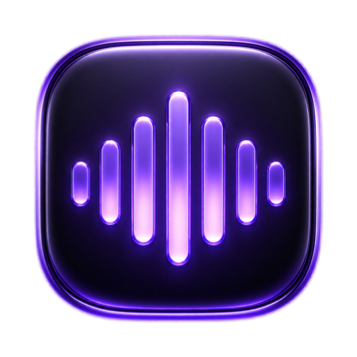

Hold a key, talk, release.
Clean text appears wherever your cursor is.
curl -fsSL https://raw.githubusercontent.com/matsumediastorage-beep/free-flow/main/install.sh | bash
Paste it into Terminal and press Return. Open Terminal with ⌘ Space, type “terminal”, Return.
Nothing works until all three are granted. The setup window links straight to the right page for each one. If you skip them, holding the key will appear to do nothing.
A quick tap does nothing on purpose — that's what stops Shift+A from triggering it. Pressing any other key while holding cancels. Prefer a different key? Dashboard → Settings → Dictation key; Right Option and Fn have no typing conflict at all.
| Apple Silicon Mac | M1 or newer. There's no Intel version — the speech model runs on the Neural Engine. |
| macOS 14 or later | The installer checks and stops if not. |
| ~600 MB free | Speech model, downloaded once. |
| macOS 26 + Apple Intelligence | Optional. Enables the free cleanup that removes “um”, fixes punctuation and applies spoken corrections. Without it you still get transcription. |
Your voice never leaves your Mac. Speech recognition and text cleanup both run on-device. There's no account, no server, and it works on a plane.
Dictation history is stored locally and only you can read it.
It shouldn't — the Terminal command avoids that. But if you downloaded the app in a browser instead, macOS blocks it, because this app isn't notarized by Apple.
Fix: delete what you downloaded and use the command above instead.